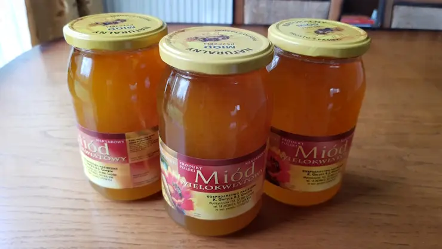
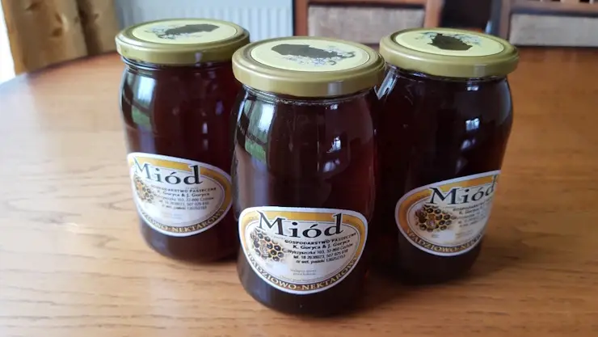
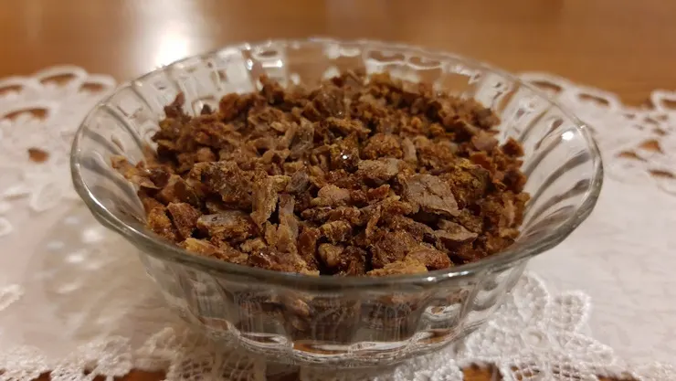
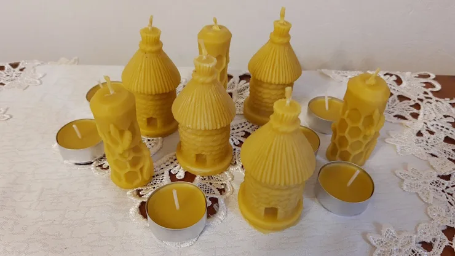
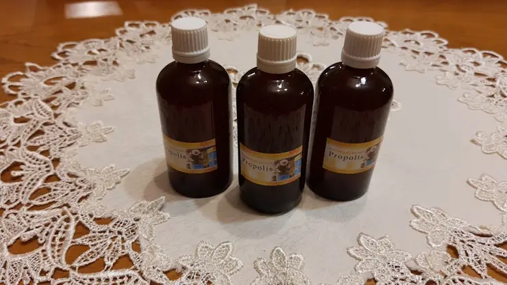
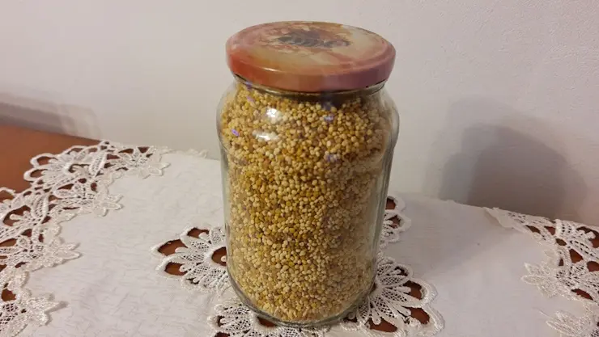

Nasza oferta
Produkty, które Państwu oferujemy, pochodzą prosto z naszych
pasiek i są owocem pracy naszych pszczół. Nie ingerujemy
w żaden sposób w ich jakość i pozyskując je,
staramy się zachować ich wszelkie naturalne walory.

Miód wielokwiatowy
-
Zbiór w maju 2022r. -
Miód z mniszka i drzew owocowych -
Naturalny zamiennik cukru -
Polecany w stanach przemęczenia -
Wspomaga leczenie przeziębień -
Naturalny, bez żadnych domieszek -
Słoik 0.9l zawiera 1.30 kg miodu

Miód nektarowo-spadziowy
-
Zbiór w czerwcu 2023r. -
Spadź liściasta z nektarem akacji -
Łagodny, niepowtarzalny smak -
Zmniejsza szkodliwe działania używek -
Działa przeciwzapalnie -
Naturalny, bez żadnych domieszek -
Słoik 0.9l zawiera 1.30 kg miodu

Propolis
-
Zdrowie w darze od natury -
Działa przeciwwirusowo -
Wspomaga gojenie się ran -
Działa przeciwwrzodowo -
Łagodzi bóle miesiączkowe -
Wzmacnia odporność -
Reguluje ciśnienie krwi

Świece z wosku pszczelego
-
Naturalne i ekologiczne -
Jonizują powietrze -
Łagodzą objawy astmy i alergii -
Neutralizują brzydkie zapachy -
Spalają się bezdymowo -
Nie zawierają szkodliwych substancji -
Idealny pomysł na prezent

Nalewka z propolisu
-
Leczy infekcje dróg oddechowych -
Naturalny antybiotyk -
Obniża poziom cukru we krwi -
Reguluje poziom cholesterolu -
Poprawia zdrowie jamy ustnej -
Ma właściwości przeciwzapalne -
Działa przeciwnowotworowo

Pyłek pszczeli
-
Poprawia zdrowie i kondycję fizyczną -
Wzmacnia odporność -
Prawdziwa bomba witaminowa -
Działa przeciwzapalnie i odtruwająco -
Wspomaga leczenie wielu chorób -
Wpływa korzystnie na koncentrację -
Obniża poziom tłuszczu we krwi